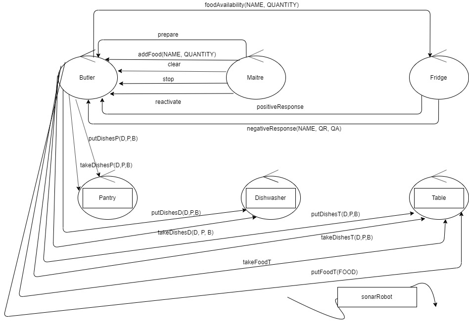
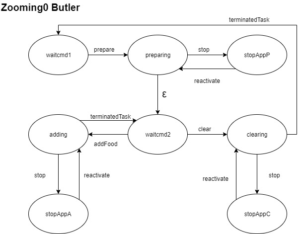
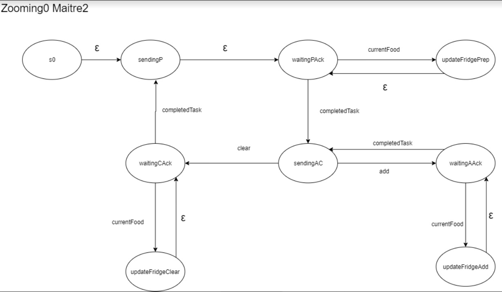
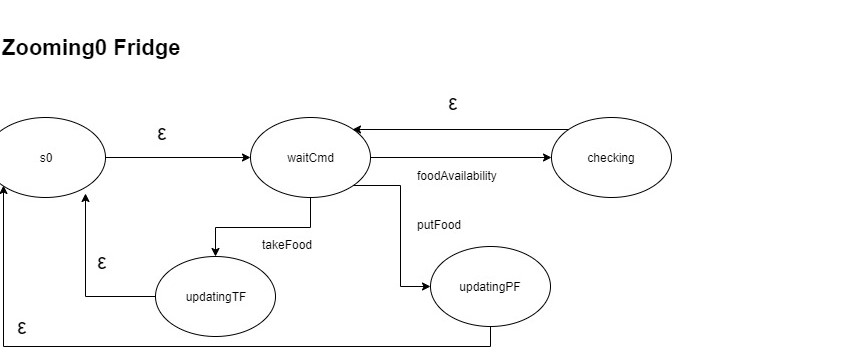
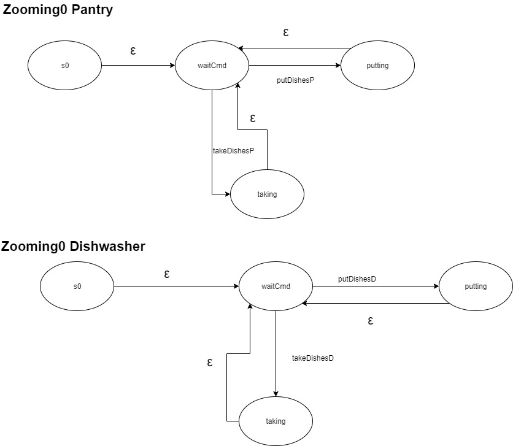

Introduction
Per l'implementazione del software richiesto dal committente, ho utilizzato un approccio incrementale. Inizialmente
parto da una visione generale e semplificata del sistema, cogliendo solo gli aspetti essenziali della logica del sistema, realizzando di volta in volta un prototipo funzionante che fungerà da base per lo step
implementativo successivo.
Inoltre nello sviluppo del sistema ho seguito un approccio top-down, concentrandomi inizialmente sull'architettura logica del sistema,
intesa in termini di struttura, interazione, comportamento. Solo in un secondo momento decido quale tecnologia utilizzare per l'implementazione del sistema.
Requirements
A room dedicated to support a
Standing Buffet Service is equipped with a set of (smart and non-smart) resources including
a
fridge, a
dishwasher, a
pantry, and a ddr robot able to work as a
Room Butler (called from
now on
RBR (
Room Butter Robot).
The
fridge, the
dishwasher and the
pantry are embedded into a wall of the room,
so to exclude any protuberance from the wall itself.
A
Table is put at the center of the room.
The behavior of the
Buffet Service is supervised by a
Maître de salle (or simply
Maitre)
which can tell the
RBR to perform a set of tasks, including:
- Prepare the room. This task consists in putting on the Table dishes taken from the
pantry, and food taken from the fridge. The set of items to put on the table
in this phase is fixed and properly described somewhere.
- Clear the room. This task consists in bringing non-consumed food again in the fridge and
the dishes in the dishwasher.
- Add food on the table. This task consists in bringing some specific food (if it exists)
from the fridge to the Table.
Thus, the
fridge is intended to be a smart device owning explicit knowledge of the food stored in it.
Moreover, it should be able to answer (via
CoAP) to questions about its content, asked by humans or machines.
The
pantry and the
dishwasher are (at the moment) non-smart resources.
Design and build the software to put on board of the
fridge and of the
RBR. In particular,
the
RBR must be able to accept the following commands sent by the
smart-phone of
Maitre:
- prepare: the RBR must execute in autonomous way the Prepare the room task.
- add food: the RBR must execute in autonomous way the Add food task.
- clear: the RBR must execute in autonomous way the Clear the room task.
These tasks are normally executed in sequence, and the main scenario can be summarized as follows:
- At start, the room is empty (i.e. no people is in it, besides the Maitre) while the pantry
and the fridge are filled with a proper set of items. The RBR is in its RH location
and the dishwasher is empty.
- The Maitre sends to the RBR the prepare command and waits for the completion
of the related task. At the end, the RBR is in its RH location again.
- The Maitre opens the room to people. During the service, the Maitre can send to the RBR
the add food command, by specifying a food-code. The RBR executes the task only if food
with the given code is available in the fridge, otherwise it sends a warning to the Maitre. After the task completion,
the RBR returns is in its RH location.
- At the end of the party, the Maitre Maitre sends to the RBR the clear command
and waits for the completion of the task. The RBR returns is in its RH location again.
However, the
Maitre is able, at any time, to
use his/her smart-phone to:
- consult the state of the room, e.g. to known what are the objects related to each resource;
for example, the object currently posed on the Table, in the dishwasher, etc;
- stop or reactivate an activated task.
Finally, the
RBR must be able to
- avoid the impact with mobile obstacles (e.g. the Maitre
or other humans / animals present in the room).
The software to put on the
fridge should make the device able to:
- expose its current content on the Maitre smart-phone;
- answer to questions about its content (e.g. if it contains food with a given code ).
Requirement analysis
Dopo aver letto i requisiti proposti dal committente, ed aver chiarito con quest'ultimo eventuali dubbi,
i requisiti da soddisfare sono i seguenti:
- Il sistema da realizzare è un sistema distribuito, formato da vari componenti:
RBR, MAITRE, FRIDGE, PANTRY, DISHWASHER, TABLE. I componenti lavorano eventualmente su
nodi distinti.
- RBR riceve ed esegue i comandi provenienti dal MAITRE. I comandi possono essere i seguenti : PREPARE, ADDFOOD,
CLEAR, STOP, REACTIVATE.
- Il comando PREPARE richiede che RBR sia in grado di prendere i piatti dalla pantry e portarli sul tavolo,
prendere i cibi dal frigo e portarli sul tavolo, ritornare nella posizione di partenza ( RH ).
- Il comando ADDFOOD richiede che RBR, una volta ricevuto il comando, prima interroghi il frigo riguardo la disponibilità
del cibo richiesto, in caso di risposta affermativa, si reca presso il frigo, preleva il cibo, lo porta sul tavolo e successivamente ritorna
nella posizione RH. In caso di risposta negativa, invia al Maitre un warning.
- Il comando CLEAR richiede che RBR sia in grado di prendere i piatti dal tavolo e portarli alla dishwasher, prendere il cibo
dal tavolo e portarlo nel frigo ed infine ritorna nella posizione RH.
- Le tre azione PREPARE, ADDFOOD, CLEAR devono essere eseguito in questo preciso ordine. Per quanto riguarda l'azione ADDFOOD ne possono essere eseguite zero o più.
- Il Maitre deve inviare i comandi a RBR tramite il proprio smartphone.
- Il Maitre deve poter consultare in ogni momento lo stato della sala.
- Il Maitre può interrompere in ogni istante l'azione che il butler sta eseguendo, inviando il comando STOP, e successivamente
riattivarla con il comando REACTIVATE
- Il Fridge è un dispostivo smart, e come tale conosce il proprio stato ed è in grado di comunicarlo agli altri componenti del sistema ( expose).
- Il Fridge deve poter essere interrogato sul suo contenuto, fornendo una risposta, positiva o negativa, riguardo la disponibilità di un
determinato cibo ( answer).
- Il Fridge deve comunicare con gli altri componenti utilizzando il protocollo CoAP.
- RBR deve essere in grado, mentre si muove nella stanza, di evitare gli ostacoli.
Problem analysis
Dall'analisi dei requisiti, deduciamo che il nostro sistema sistema distribuito è formato da cinque entità:
RBR,
MAITRE,
FRIDGE,
PANTRY,
DISHWASHER,
TABLE che devono interagire. Essendo un sistema distribuito eterogeneo non posso utilizzare la remote method invocation come modalità di interazione tra le entità, in quanto non conosco a priori la tecnologia con cui sono implementati. A questo punto devo trovare una strada diversa per permettere alle entità di interagire, posso seguire due strade:
- Costruisco un'infrastruttura che mi permetta di colmare le differenze tecnologiche tra le varie entità
- Verifico se nella nostra softwareHouse è presente qualche libreria che mi permetta di superare questo problema
La scelta ricade sulla seconda opzione per due motivi principali:
- A questo livello di dettaglio voglio interessarmi dell'architettura logica del sistema tralasciando tutti gli aspetti legati alle tecnologie da usare
- Nella nostra softwareHouse è presente il modello dei QAK
A questo punto cambio modello, le mie entità diventano degli Attori che interagiscono a scambio di messaggi, inviando dispatch e/o event.
Modello dell'architettura del sistema
|

|
In questo primo modello del sistema, siamo interessati all'architettura logica, non a come verranno implementati
i vari componenti. L'obiettivo di questa figura è quello di mostrare la struttura e l' interazione
dei vari componenti. L'interazione, essendo un sistema distribuito, avviene tramite lo scambio di messaggi, di cui identifichiamo due tipi:
- Dispatch un messaggio destinato ad uno specifico attore.
- Event un messaggio che verrà recepito da tutti gli attori all'ascolto ed elaborato solo da quelli che ne sono interessati. Lato mittente
è un messaggio del tipo "fire and forget".
|
Un'architettura del sistema più precisa è data dall'utilizzo di un modello scritto in un linguaggio
comprensibile ad una macchina. Utilizzando il linguaggio dei QActor, in cui ogni attore è visto come un automa a stati
finiti, è possibile effettuare una rapida prototipazione, in quanto il linguaggio permette di scrivere dei modelli eseguibili (comprensibili ad una macchina).
System system0
//from maitre to butler
Dispatch prepare : prepare(P)
Dispatch addFood : addFood(C,Q) //C = food code, Q = quantity
Dispatch clear : clear(C)
Dispatch stop : stop(S)
Dispatch reactivate : reactivate(R)
//from butler to butler
Dispatch terminatedTask : terminatedTask(TASK)
//from maitre to maitre
Dispatch add : add(A)
Dispatch cl : cl(C)
//from butler to maitre
Dispatch completedTask : completedTask(X)
Dispatch warning : warning(C,Q,AQ) //C = food code, Q = quantity, AQ = quantità disponibile nel frigo
//from butler to fridge
Dispatch foodAvailability : foodAvailability(C,Q) //C = food code, Q = quantity
Dispatch takeFood : takeFood(C,Q) //C = food code, Q = quantity
Dispatch putFood : putFood(C,Q) //C = food code, Q = quantity
//from butler to pantry
Dispatch takeDishesP : takeDishesP(D,P,B)
Dispatch putDishesP : putDishesP(D,P,B)
//from butler to dishwasher
Dispatch takeDishesD : takeDishes(D)
Dispatch putDishesD : putDishesD(D,P,B)
//from pantry to butler
Dispatch returnStateP : returnStateP(X)
//from dishwasher to butler
Dispatch returnStateD : returnStateD(X)
//from fridge to butler
Dispatch positiveResponse : positiveResponse(C,Q) //C = food code, Q = quantity
Dispatch negativeResponse : negativeResponse(C,Q,AQ) //C = food code, Q = quantity, AQ = quantità disponibile nel frigo
//from fridge to maitre
Dispatch currentFood : currentFood(X) //in una fase successiva si deciderà come comunicare il contenuto del frigo
Dispatch foodAvailability : foodAvailability(C,Q)
Dispatch positiveResponse : positiveResponse(P)
Dispatch negativeResponse : negativeResponse(C,QR,AQ)
Context ctxButler ip[host="localhost" port=8080]
Context ctxMaitre ip[host="localhost" port=8081]
Context ctxFridge ip[host="localhost" port=8082]
QActor butler context ctxButler{}
QActor maitre context ctxMaitre{}
QActor fridge context ctxFridge{}
QActor pantry context ctxButler{}
QActor dishwasher context ctxButler{ }
Nello zooming0, si definiscono, in modo ancora molto generale, struttura, interazione e comportamento dei
vari componenti del sistema. Analizzo separatamente ogni componente andando ad evidenziare per ognuno:
- L'automa che ne mostra il comportamento
- Il prototipo realizzato sfruttanfo l'infrastruttura dei QActor
Butler
Il Butler (RBR) è un componente proattivo/reattivo poichè deve sia eseguire i comandi che gli vengono inviati dal Maitre,
sia reagire agli eventi emessi dal sonar per evitare gli ostacoli.
Essendo un FSM, per transitare da uno stato ad un altro è necessario un messaggio, spesso
però ci possono essere delle transizioni spontanee. Nel linguaggio dei QActor, le transizioni sponstanee si
implementano tramite
Goto.
Problema: come faccio nello stesso stato ad eseguira una epsilon mossa ma essere anche sensibile ai messaggi provenienti
da altri attori?
Soluzione: le espsilon mosse le implemento tramite auto-messaggi che il butler invia a se stesso.
|

|
Modello eseguibile espresso con il linguaggio dei QActor.
QActor butler context ctxButler{
State so initial{
}Goto waitCmd1
State waitCmd1{
}Transition t0 whenMsg prepare -> preparing
State preparing{
}
Transition t0 whenMsg terminatedTask -> waitCmd2
whenMsg stop -> stopApplicationP
State waitCmd2{
}Transition t0 whenMsg addFood -> adding
whenMsg clear -> cleaning
State stopApplicationP{
}Transition t0 whenMsg reactivate -> preparing
State adding{
}Transition t0 whenMsg terminatedTask -> waitCmd2
whenMsg stop -> stopApplicationA
State stopApplicationA{
}Transition t0 whenMsg reactivate -> adding
State cleaning{
}Transition t0 whenMsg terminatedTask -> waitCmd1
whenMsg stop -> stopApplicationC
State stopApplicationC{
}Transition t0 whenMsg reactivate -> cleaning
}
|
Maitre
Per una prima prototipazione ho modellato il Maitre come un attore, in questo modo posso testare la correttezza della
logica del sistema, e preoccuparmi solo in un secondo momento della tecnologia con cui andare
ad implementare il frontend.
|

|
Modello eseguibile espresso con il linguaggio dei QActor.
QActor maitre context ctxMaitre{
State s0 initial{
}Goto sendingP
State sendingP{
}Goto waitingPAck
State waitingPAck{
}Transition t0 whenMsg completedTask -> sendingAC
whenMsg currentFood -> updateFP
State sendingAC{
}Transition t0 whenMsg add -> waitingAfAck
whenMsg cl -> waitingClAck
State waitingAfAck{
}Transition t0 whenMsg completedTask -> sendingAC
whenMsg currentFood -> updateFA
State waitingClAck{
}Transition t0 whenMsg completedTask -> sendingP
whenMsg currentFood -> updateFC
State updateFP{
//aggiorno informazioni sul contenuto del frigo
}
State updateFC{
//aggiorno informazioni sul contenuto del frigo
}
State updateFA{
//aggiorno informazioni sul contenuto del frigo
}
}
|
Nello stato sendingP, il Maitre può solo inviare il comando prepare, poichè da requisiti c'è un preciso ordine
nell'esecuzione delle azioni: prepare, addfood, clear.
Durante l'implementazione dell'automa del maitre sono sorti vari problemi:
Problema: il maitre deve sapere quando il butler ha terminato un'attività. Questa interazione è di tipo request/response, il linguaggio dei QActor,
non prevede un'operazione built-in per l'implementazione di questo tipo di interazione.
Soluzione: prevedo l'aggiunta di ulteriori stati (waitingPAck, waitingAfAck, waitingClAck ) in cui il maitre attende il messaggio dal butler di avvenuto completamento di un'azione.
Durante l'attesa di questi messaggi, il maitre, da requisito è attivo, poichè in un qualsiasi istante può inviare un messaggio di stop o reactivate.
Nello stato sendingAC, il Maitre può inviare o il messaggio di AddFood o il messaggio di clear, ma alla ricezione dell'ack avrà un comportamento differente a seconda
del messaggio inviato, alla luce di ciò, è necessario prevedere 2 stati di wait per l'ack. Questo perchè alla ricezione di un messaggio completedTask(addfood) transiterà nuovamente nello stato
SendindAC, mentre una volta ricevuto il messaggio completedTask(clear), per rispettare i requisiti sull'ordine di esecuzione delle azioni, transiterà nello stato sendingP.
Priblema: in quale stato il maitre è sensibile ai messaggi provenienti dal frigo?
Soluzione: in questa fase dell'analisi assumo che il maitre sia sensibile ai messaggi provenienti dal fridge negli stati di waiting.
Fridge
A questo livello dell'analisi, trascuro il requisito riguardo al fatto che il fridge deve comunicare con gli altri attori utilizzando il protocollo CoAP. L'interazione tra
il frigo e gli altri attori avviene tramite lo scambio di dispatch.
|

|
Modello eseguibile espresso con il linguaggio dei QActor.
QActor fridge context ctxFridge{
State s0 initial{
forward maitre -m currentFood : currentFood(lista)
}Goto waitCmd
State waitCmd{
}Transition t0 whenMsg foodAvailability -> checking
whenMsg takeFood -> updatingTf
whenMsg putFood -> updatingPf
State checking{
}Goto waitCmd
State updatingTf{
}Goto s0
State updatingPf{
}Goto s0
}
|
Da requisito il Fridge deve poter essere interrogato sulla disponibilità di un determinato cibo dal Butler ( answer ), inoltre deve esporre il proprio
contenuto al Maitre (expose).
Per soddisfare il requisito answer, nell'automa ho previsto lo stato checking, in cui si andrà a verificare la disponiblità di un cibo e verra inviato un dispatch tra positiveResponse
o negativeResponse.
Per soddisfare il requisito expose, all'avvio il Fridge comunica tutto il suo contenuto al Maitre, successivamente, ogni volta che verrà prelevato o aggiunto un cibo al
Fridge, quest'ultimo invierà un dispatch al Maitre per aggiornarlo.
Pantry Table Dishwasher
|

|
Modello eseguibile espresso con il linguaggio dei QActor.
QActor pantry context ctxButler{
State s0 initial{
println("Pantry STARTED")
}Goto waitCmd
State waitCmd{
}Transition t0 whenMsg takeDishesP -> taking
whenMsg putDishesP -> putting
State taking{
}Goto waitCmd
State putting{
}Goto waitCmd
}
QActor dishwasher context ctxButler{
State s0 initial{
}Goto waitCmd
State waitCmd{
}Transition t0 whenMsg takeDishesD -> taking
whenMsg putDishesD -> putting
State taking{
}Goto waitCmd
State putting{
}Goto waitCmd
QActor table context ctxButler{
State s0 initial{
}Goto waitCmd
State waitCmd{
}Transition t0 whenMsg takeDishesT -> taking
whenMsg putDishesT -> putting
whenMsg takeFoodT -> takeFood
whenMsg putFoodT -> putFood
State taking{
}Goto waitCmd
State putting{
}Goto waitCmd
State takeFood{
}Goto waitCmd
State putFood{
}Goto waitCmd
}
}
|
Da requisito, Pantry e Dishwasher non sono entità, non smart, che prevedono un'interfaccia per poter accedere al loro contenuto. Nonostante non siano attori,
è oppurtuno incapsularle all'interno di due attori. Questo da un lato garantisce una maggior integrazione con il sistema distribuito che stiamo implementando, dall'altro
consente una più veloce modifica ( nel passaggio da dispositivo non smart a smart) nel caso in cui, in futuro, il committente richieda di soddisfare questo nuovo requisito.